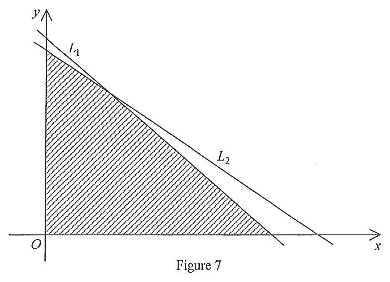

題目
(a) 圖 7 中，直線 $L_{1}$ 的方程為 $6x+7y=900$，直線 $L_{2}$ 的 $x$ 截距為 $180$。$L_{1}$ 與 $L_{2}$ 相交於點 $(45,90)$。陰影區域（包括邊界）代表一組不等式的解。求該不等式組。
(b) 一間工廠生產 $X$ 及 $Y$ 兩款衣櫃。每個 $X$ 款衣櫃需要 $6$ 個工時裝配及 $2$ 個工時包裝，而每個 $Y$ 款衣櫃需要 $7$ 個工時裝配及 $3$ 個工時包裝。在某個月，該工廠有 $900$ 個裝配工時及 $360$ 個包裝工時可用。生產一個 $X$ 款衣櫃及一個 $Y$ 款衣櫃的利潤分別為 ＄440 及 ＄665。一名工人聲稱該月的總利潤可超過 ＄80 000。你是否同意？試解釋。

圖（原卷附圖）
題解
第 1 步
(a) 先求 $L_{2}$ 的方程
兩點式
\(y-y_{1}=\dfrac{y_{2}-y_{1}}{x_{2}-x_{1}}\,(x-x_{1})\)
已知 $L_{2}$ 過 $(180,0)$ 與 $(45,90)$ 兩點，用兩點式即得方程。
$L_{2}$ 的斜率
\[ \frac{90-0}{45-180}=\frac{90}{-135}=-\frac{2}{3}, \]
故
\[ y-0=-\frac{2}{3}(x-180)\ \Longrightarrow\ 2x+3y=360. \]
核對交點：$2(45)+3(90)=90+270=360$，正確。
第 2 步
(a) 由陰影位置決定不等號方向
以測試點判斷半平面
\(F(x,y)\le k\ \text{is the side containing the origin if}\ F(0,0)\le k\)
原點 $(0,0)$ 在陰影區內，代入兩條直線即可判斷應取「小於等於」。
陰影區域位於第一象限，故
\[ x\ge 0,\qquad y\ge 0. \]
以原點測試：$6(0)+7(0)=0\le 900$、$2(0)+3(0)=0\le 360$，而原點在陰影區內，故陰影在兩條直線的下方：
\[ 6x+7y\le 900,\qquad 2x+3y\le 360. \]
所求不等式組為
\[ x\ge 0,\quad y\ge 0,\quad 6x+7y\le 900,\quad 2x+3y\le 360. \]
第 3 步
(b) 檢驗各頂點的利潤
線性規劃的最優值出現在頂點
\(P=ax+by\ \text{takes its maximum at a vertex of the feasible region}\)
利潤函數 $P=440x+665y$ 是線性的，故最大值必在可行區域的某個頂點取得。
由 (a) 的條件，可行區域的頂點為
\[ (0,0),\quad (150,0),\quad (0,120),\quad (45,90), \]
其中 $(45,90)$ 是兩條直線的交點，$(150,0)$ 來自 $6x=900$，$(0,120)$ 來自 $3y=360$。
逐點計算 $P=440x+665y$：
\[ (0,0):\ 0,\qquad (150,0):\ 440\times150=66000, \]
\[ (0,120):\ 665\times120=79800,\qquad (45,90):\ 440\times45+665\times90=79650. \]
最大利潤為 ＄79 800（$x=0$、$y=120$），不超過 ＄80 000，
故不同意該工人的聲稱。
答案(a) $x\ge0$、$y\ge0$、$6x+7y\le900$、$2x+3y\le360$ (b) 不同意：最大利潤為 ＄79 800（生產 $X$ 款 $0$ 個、$Y$ 款 $120$ 個），不超過 ＄80 000